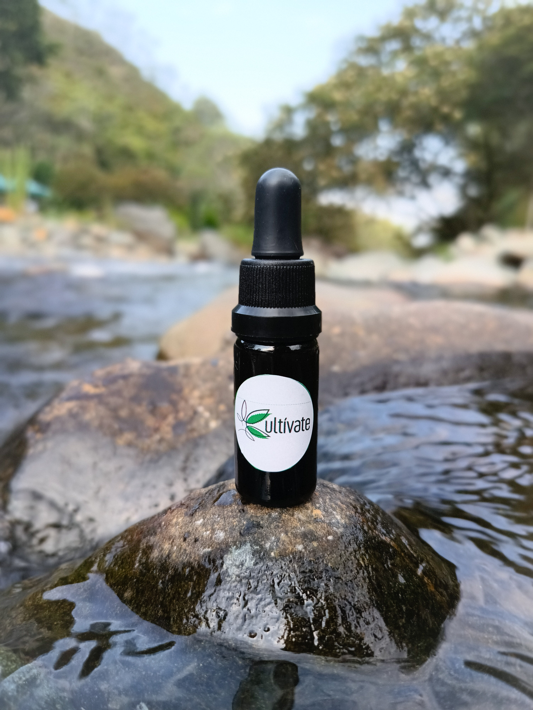
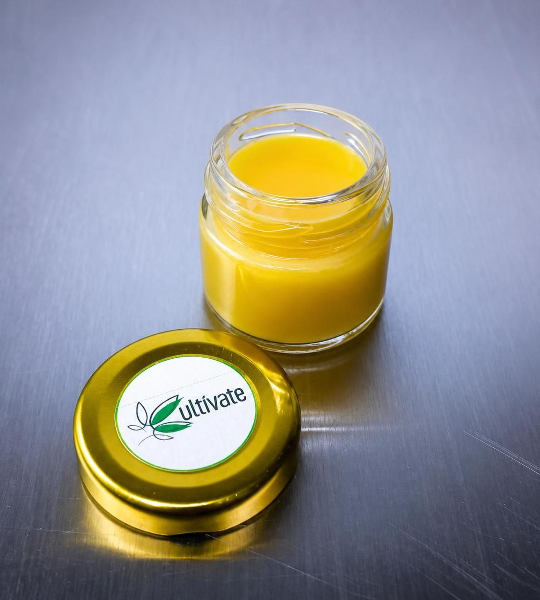
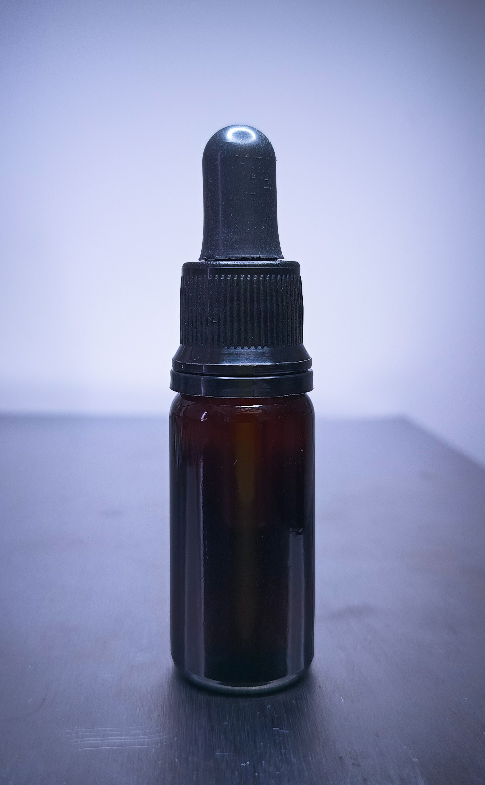

Bienestar Natural
Respaldado por la Ciencia
Productos de cannabis medicinal premium, extraídos de cáñamo orgánico certificado, formulados para aliviar el dolor, la ansiedad y mejorar tu calidad de vida de forma natural.
Evidencia Científica
Usos Terapéuticos del Cannabis Medicinal
El sistema endocannabinoide regula funciones vitales del organismo. Los cannabinoides interactúan con este sistema para restaurar el equilibrio y aliviar diversas condiciones.
Ansiedad y Estrés
El CBD interactúa con los receptores serotoninérgicos del cerebro, modulando la respuesta al estrés y reduciendo la ansiedad crónica sin efectos sedativos significativos.
- ◆ Trastorno de ansiedad generalizada
- ◆ Estrés postraumático
- ◆ Ansiedad social
Trastornos del Sueño
Estudios clínicos muestran que el cannabis medicinal puede reducir el tiempo de latencia del sueño y mejorar su calidad, especialmente en pacientes con insomnio relacionado al dolor o la ansiedad.
- ◆ Insomnio crónico
- ◆ Apnea del sueño
- ◆ Síndrome de piernas inquietas
Dolor Crónico
Los cannabinoides actúan sobre el sistema endocannabinoide para modular la percepción del dolor. Son especialmente efectivos en dolor neuropático donde los analgésicos convencionales tienen limitaciones.
- ◆ Fibromialgia
- ◆ Dolor lumbar crónico
- ◆ Artritis reumatoide
- ◆ Dolor neuropático
Enfermedades Neurológicas
El CBD tiene propiedades neuroprotectoras y anticonvulsivantes documentadas. La FDA aprobó Epidiolex (CBD puro) para epilepsia refractaria, abriendo camino a su uso terapéutico neurológico.
- ◆ Epilepsia refractaria
- ◆ Esclerosis múltiple
- ◆ Enfermedad de Parkinson
Náuseas y Apetito
Ampliamente utilizado en oncología para reducir las náuseas inducidas por quimioterapia y estimular el apetito en pacientes que han perdido peso significativo durante el tratamiento.
- ◆ Náuseas por quimioterapia
- ◆ Anorexia
- ◆ Síndrome de desgaste por VIH
Inflamación y Autoinmune
Los cannabinoides exhiben potentes propiedades antiinflamatorias al modular citoquinas proinflamatorias y la activación del sistema inmune, útiles en enfermedades autoinmunes.
- ◆ Enfermedad de Crohn
- ◆ Colitis ulcerosa
- ◆ Lupus
- ◆ Psoriasis
¿Qué es el Sistema Endocannabinoide?
El sistema endocannabinoide (SEC) es una red de receptores presente en todo el cuerpo humano que regula el sueño, el apetito, el estado de ánimo, la memoria y la respuesta al dolor. Cuando este sistema se desequilibra, aparecen diversas patologías. Los fitocannabinoides del cannabis —como el CBD y el CBG— interactúan con los receptores CB1 y CB2 del SEC, ayudando a restaurar la homeostasis del organismo.
Nuestra Línea Terapéutica
Productos Cultivate
Cada producto es formulado con rigor científico y trazabilidad completa, desde el cultivo hasta el frasco.

Aceite CBD Full Spectrum 1000mg
Aceite de cáñamo de espectro completo, rico en cannabidiol natural. Ideal para manejo del estrés, ansiedad y bienestar general.

Aceite de CBD para mascotas 200mg
Fórmula pensada para el manejo del estrés y la ansiedad. Ayuda a promover la calma, el equilibrio y el bienestar diario, para que tu compañero se sienta más relajado.

Crema Tópica CBD 500mg – Alivio Muscular
Crema de acción local enriquecida con CBD, miel y aceite de oliva para aliviar dolores musculares, articulares e inflamación.

Fórmulas Magistrales de CBD - Desde 2000mg
Formulación de alta concentración para casos que requieren dosificación precisa. Para dolor crónico, neuropático y condiciones complejas.
Nuestra Misión
Cannabis Medicinal con Propósito
En Cultivate creemos que la naturaleza ofrece respuestas poderosas para el bienestar humano. Trabajamos con agricultores certificados para cultivar cáñamo industrial de la más alta calidad, utilizando prácticas sostenibles que respetan la tierra y el ecosistema.
Antes de cualquier procesamiento, cada lote de flor es analizado por laboratorios independientes certificados para verificar concentración de cannabinoides, ausencia de pesticidas, metales pesados y contaminantes microbiológicos.
Origen Certificado
Cáñamo cultivado en zonas premium con suelos ricos en minerales, sin herbicidas ni pesticidas sintéticos.
Extracción mediante Lixiviación controlada
Técnica gold standard que preserva todos los cannabinoides sin residuos de solventes.
Triple Verificación
Análisis interno, laboratorio externo y certificación de terceros para garantizar pureza y potencia de la flor antes de ser procesada.
Compromiso Sostenible
Envases reciclables, procesos con huella de carbono mínima y apoyo a productores locales.

¿Tienes dudas sobre qué producto es para ti?
Nuestro equipo de bienestar está disponible para orientarte sobre los productos más adecuados para tus necesidades. Recuerda siempre consultar con tu médico antes de iniciar cualquier suplementación.